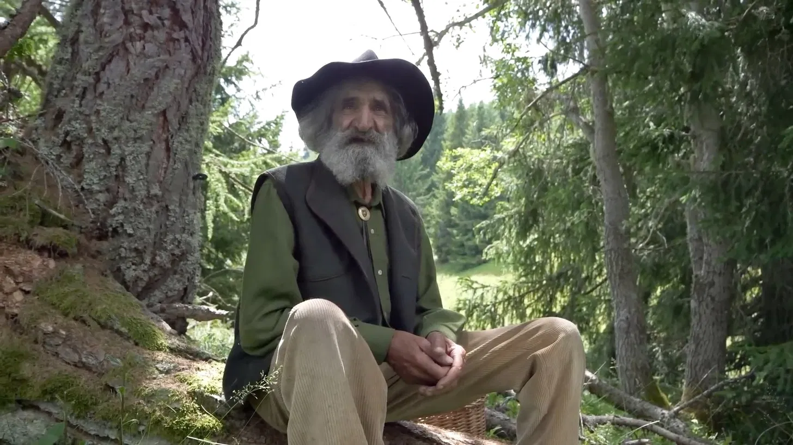
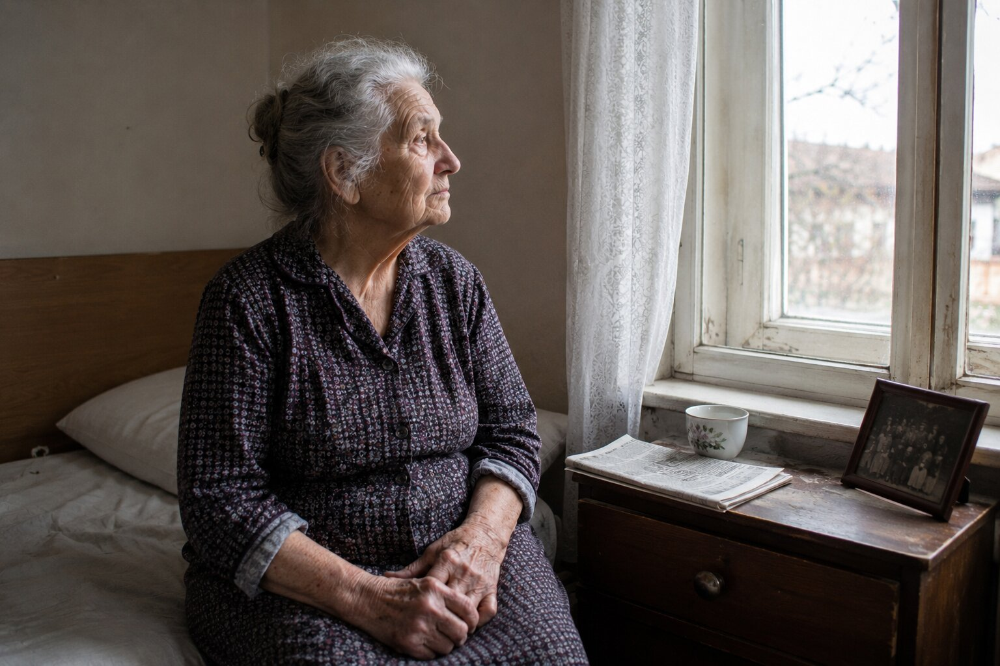
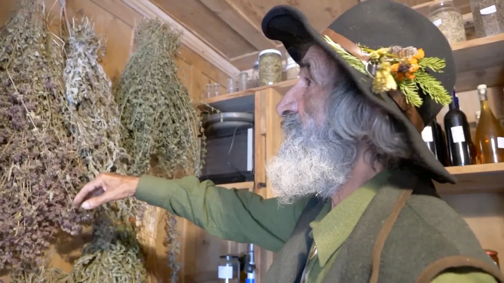

Am urcat într-o joi, pe la prânz. Ceața încă stătea agățată de brădet. Ultimii doi kilometri i-am făcut pe jos, fiindcă drumul forestier se termină într-o poiană. „Îl căutați pe moș Traian?" — ne-a întrebat un bărbat care încărca fânul în căruță, la capătul satului. „Luați poteca din dreptul crucii de lemn. Casa lui e lângă izvor. Da' grăbiți-vă, că pe la două urcă la brazi după rășină."
Așa l-am găsit pe Traian Cormoș — meșter lemnar de 74 de ani care și-a trăit toată viața în Apuseni și care astăzi strică una dintre cele mai comode minciuni din România: că pentru durerea de articulații nu se mai poate face nimic. O soluție care nu ține de pastile, de injecții sau de operație. Ci de întâlnirea dintre pădure, răbdare și o memorie de familie veche de o sută de ani.
În satele din jur — la Albac, la Vidra, la Scărișoara, la Câmpeni — aproape fiecare familie a auzit de moș Traian. Fetele își aduc tații care abia mai calcă. Femeile comandă cutii pentru mamele rămase singure. Bărbații vin după ture lungi, ca să-și poată face treaba a doua zi. Medicul de familie din comună recunoaște: „Nu pot să explic ce face omul ăsta. Dar pacienții mei chiar se ridică din pat."

„Trupul știe tot. Trebuie doar să faci liniște, ca să-l auzi." Discuție cu moș Traian în inima Apusenilor — în casa lui de bârne, unde de pe grinzi atârnă mănunchiuri de plante uscate, iar pe poliță stă un caiet legat în piele de oaie, vechi de o sută de ani
Moș Traian Cormoș: „Țin minte ziua aia ca și cum ar fi fost ieri. Era prin februarie, ningea de trei zile și nu urcase nimeni pe drum. Tocmai puneam rășina la topit lângă sobă — atunci o făceam numai pentru genunchii mei. Aud bătaie în ușă. Era o femeie de vreo șaizeci de ani, venită pe jos peste deal, din valea cealaltă, cu zăpada până la genunchi. Avea gheața prinsă în broboadă. Ochii îi erau ca apa stătută — plini de frică. S-a așezat pe laviță și mi-a zis:
„Nea Traiane, te rog, salvează-l pe bărbatul meu. Se stinge. I s-au înțepenit toate încheieturile, genunchii sunt duși. Doctorii nu mai au ce să-i facă. Nu poate să meargă, nu poate să se ridice, nu poate nici măcar să stea pe scaun. Doar zace și plânge."
ATUNCI AM ÎNȚELES: CE MI-A LĂSAT BUNICUL NU MI-A FOST LĂSAT NUMAI MIE — CI ȘI PENTRU FEMEIA AIA ȘI PENTRU BĂRBATUL EI. ÎN ZIUA ACEEA AM HOTĂRÂT SĂ DUC MAI DEPARTE."

Moș Traian vorbește rar, cu pauze lungi — ca și cum ar cântări fiecare cuvânt înainte să-l spună. Are mâini mari, noduroase, de om care a lucrat lemnul o viață. Degetele îi sunt pătate de rășină și de rădăcini, cu care se ocupă de șaizeci și cinci de ani. În spatele lui, pe perete, atârnă mănunchiuri uscate de sunătoare și coada-șoricelului. Pe poliță stau borcane, sticluțe întunecate și un caiet gros, legat în piele de oaie, tocit la colțuri — caietul bunicului său Gavrilă.
„Oamenii cred că durerea de articulații ține de vârstă. Asta e o minciună comodă. Genunchiul, spatele, șoldul — sunt ca o pădure. Dacă o îngrijești, ține sute de ani. Dacă o storci și o otrăvești, în șase-opt ani se usucă. Medicina de azi nu îngrijește articulațiile. Doar adoarme durerea. Și în fiecare an dă tot mai multe pastile. Până când omul cade și-și rupe un os."
„Farmacia nu spune adevărul — fiindcă, dacă l-ar spune, ar da faliment" Moș Traian Cormoș explică de ce tratamentele obișnuite pentru articulații fac, în timp, mai mult rău decât bine
Moș Traian Cormoș:
— Hai să-ți spun ce văd lună de lună la cei care urcă la mine. Femeie de șaizeci și cinci de ani. De zece ani ia antiinflamatoare. Durerea din genunchi e mai rea în fiecare an. Acum o doare și stomacul de la atâtea pastile. Analizele de rinichi ies prost. Doctorul îi mai dă o pastilă — acum pentru stomac. Pe urmă una pentru rinichi. Iar genunchiul, între timp, se duce. Cartilajul nu i-l reface nimeni. Doar se adoarme durerea — până când cartilajul se termină de tot.
Ăsta e cercul vicios: durere → pastilă → durerea se întoarce mai tare → pastilă mai tare → stomacul cedează → încă o pastilă pentru stomac → rinichiul cedează → iar articulația se macină mai departe. Nimeni nu spune adevărul: există și alt drum — să-i dai cartilajului ce-i lipsește și să-l lași să se refacă singur.

Durerea de genunchi, de spate sau de șold după 45 de ani nu este „normală pentru vârstă" — este semnul că se subțiază cartilajul articular și că scade lichidul sinovial. Cine acoperă semnalul ăsta cu pastile își distruge articulațiile încet și în tăcere.

Antiinflamatoarele blochează doar semnalul de durere, în timp ce distrugerea merge înainte în liniște. Fără o refacere reală a cartilajului, articulația se termină — și atunci rămân două variante: scaunul cu rotile sau operația de protezare, care în România costă peste 20.000 de lei. Niciuna nu dă viața înapoi.
Moș Traian Cormoș:
— Înțelegeți cât e de serios. La mulți dintre cei care urcă la mine, cartilajul din genunchi, din șira spinării sau din șold e dus în proporție de 70-90%. Merg os pe os — dacă mai merg. Fiecare pas e o pedeapsă. PASTILELE OBIȘNUITE NU POT REFACE CARTILAJUL — DOAR ACOPERĂ DUREREA CÂT TIMP TOTUL SE PRĂBUȘEȘTE!
Și știți ce mă doare cel mai tare? Că oamenii ăștia sunt singuri. Copiii au plecat în Italia, în Spania, în Germania, în Anglia. Farmacia le trimite pastilele o dată pe săptămână. Doctorul îi vede o dată pe an. Iar ei se macină în tăcere. Spate, genunchi, șolduri. După o vreme le e frică și să iasă din casă, de teamă să nu cadă. De-aia fac ce fac.
Oameni pe care nu-i voi uita niciodată — și povești care vor schimba felul în care priviți puterea naturii
Moș Traian Cormoș:
— Lăsați-mă să vă spun pe cine văd săptămână de săptămână. Nu vă vorbesc de statistici. Vă vorbesc de oameni. De oameni cu nume, cu familie, cu poveștile lor. De oameni pe care medicina i-a lăsat — dar pe care pădurea încă nu i-a lăsat.


Astea sunt semnele pe care le văd cel mai des — și pe care milioane de români le ignoră, crezând că-s „doar anii":
- Durere ascuțită în genunchi la urcat sau coborât scări — ori la orice mișcare;
- Înțepeneală de dimineață — corpul e „de lemn", nu se mișcă 30-60 de minute după trezire;
- Durere cronică de spate — nu se pot apleca, nu se pot ridica din pat;
- Umflături la genunchi, glezne sau degete;
- Scârțâit și pocnete în articulații la fiecare mișcare;
- Durere în șold care coboară spre coapsă — nu pot merge mai mult de 50 de metri;
- Degete deformate, noduroase — nu mai pot apuca obiectele;
- Amorțeli în picioare sau în mâini — semn de discopatie ori de nerv comprimat;
- Senzație de „cuțit" în șale când se îndreaptă de spate;
- Spate gârbovit, ținută strâmbă — cifoză care avansează;
- Durere noaptea, care nu lasă somnul — se trezesc de 4-5 ori pe noapte;
Fiecare dintre aceste simptome este o alarmă. Iar după 45-50 de ani, ignorarea lor duce într-un singur loc: IMOBILIZARE COMPLETĂ, SCAUN CU ROTILE, DEPENDENȚĂ TOTALĂ DE ALȚII — ȘI, ÎN MULTE CAZURI, UN CĂMIN DE BĂTRÂNI, UNDE COPIII VIN O DATĂ PE AN.
Fiecare zi petrecută cu articulațiile netratate vă apropie de imobilizare definitivă! Mii de pensionari români au ajuns în cămine tocmai fiindcă au ignorat durerea — sau fiindcă au luat doar pastile care n-au rezolvat cauza. Faceți ceva acum — pentru dumneavoastră sau pentru ai dumneavoastră — până nu e prea târziu!
„Bunicul umbla țara cu ciubere. Se întorcea cu rețete." Cum a ajuns moș Traian Cormoș la formula pe care o folosesc astăzi peste 1.700 de oameni din satele Apusenilor
Moș Traian Cormoș:
— A doua zi m-am dus la bărbatul femeii aceleia. În casă era întuneric și frig. Omul arăta ca o ciupercă uscată — slab, gălbejit. Trupul încă cald, dar privirea își luase deja rămas-bun. M-am așezat lângă el, l-am luat de mână și l-am întrebat: „De câți ani trăiești cu durerea asta, omule?" A tăcut. I-a curs o lacrimă pe obraz. „De șaptesprezece ani", a șoptit. „Și nimeni nu știe ce să-mi facă. Toți doar scriu rețete."
Atunci mi-am amintit de caiet. Bunicul meu, Gavrilă, a fost moț cu ciubere — din ăia care plecau toamna din Apuseni cu căruța încărcată de doniți, ciubere și butoaie și băteau țara până în Bărăgan, schimbând lemn pe grâu. Umbla luni de zile. Și oriunde poposea — la Sibiu, la Făgăraș, în Banat, în Moldova — întreba babele satului ce pun ele pe dureri. Scria tot într-un caiet, cu creion chimic, cu scrisul lui strâmb. Caietul ăla mi-a rămas mie. L-am ținut treizeci de ani în ladă. Pe o pagină, aproape ștearsă, scria așa: „Focul dinlăuntru fură din încheieturi apa și mlădierea. Numai cine cunoaște lacrima bradului le poate da viața înapoi."

Sigur, nu era o explicație științifică — era înțelepciune trecută din om în om. Dar atunci încă nu știam că ziua aceea va fi începutul a trei ani de muncă. Trei ani în care moștenirea bunicului și darurile pădurii au ajuns împreună într-o formulă făcută de mână — care poate reface cartilajul din interior, fără chimie tare.
Ce pune moș Traian în capsule:
- Rășină de brad din Apuseni — „lacrima bradului" Rășina de brad — cea pe care bunicul o numea „lacrima bradului". Medicina populară din munții noștri o folosește de secole pentru dureri de încheieturi. Antiinflamator natural, care oprește măcinarea cartilajului și trezește refacerea
- Glucozamină și condroitină — în formă naturală Cărămizile cartilajului — rezerva veche a naturii, pe care celulele o recunosc și o folosesc
- Vitamina C — în formă naturală Contribuie la producerea normală de colagen, de care au nevoie oasele și cartilajul
- Colagen tip II și MSM Întăresc ligamentele și tendoanele din jurul articulației — plasa naturală de protecție care slăbește odată cu anii
- Tămâie (boswellia) și ghimbir Extracte care potolesc inflamația din interior — cum zicea bunicul: „duhul lemnului care stinge focul"
Formula mai conține încă 14 extracte vegetale rare, pe care moș Traian și ajutoarele lui le culeg pe versanții Apusenilor timp de șase săptămâni — o singură dată pe an, când plantele sunt în pârg. Proporțiile le-a învățat din caietul bunicului și fiecare pas îl face cu mâna lui.
Așa s-au născut capsulele Jointerra — făcute de mână, din cele mai bune plante ale Apusenilor
Moș Traian Cormoș:
— Nu se naște în laborator. Se naște în șura mea, aici, la poalele muntelui. Rășina o strângem eu și ajutoarele mele, din brădetul bătrân de pe culmi, unde copacii își fac lacrima de sute de ani. Restul plantelor le culegem tot aici, pe coaste. Culesul ne ia șase săptămâni, fiindcă fiecare plantă trebuie tăiată exact în clipa în care e bună. Pe urmă măcinăm și dozăm amestecul în șarje mici. Într-o zi ies cel mult 70 de cutii — mai multe nu, că s-ar strica treaba.


La baza formulei stă o rețetă veche de o sută de ani, lăsată de bunicul lui. Pe limbaj științific de azi: combinația de extracte vegetale concentrate face ca substanțele active să pătrundă în organism și să ajungă prin sânge direct la capsula articulară, acolo unde se macină cartilajul. Iar avantajul capsulelor față de creme și unguente este că lucrează din interior — ajung la toate articulațiile deodată: genunchi, spate, șolduri, mâini, ceafă — fără să fie nevoie să te ungi peste tot. Pentru un om în vârstă care trăiește singur, asta înseamnă tihnă și independență.
Jointerra nu concurează cu nimeni. Nu vrea să se întreacă. Vrea doar să ajute. Fiecare ingredient — în proporția lui exactă — trezește refacerea cartilajului, întoarcerea lichidului sinovial și potolirea inflamației. Lucrează la nivel celular, ajungând în același timp la toate locurile lovite — genunchi, spate, șolduri, mâini, ceafă — din interiorul organismului. Și, cel mai important: lucrează și la 70, și la 80, și la 85 de ani! Primii oameni ai lui moș Traian au fost chiar cei mai bătrâni — cei pe care îi lăsase toată lumea.
Moș Traian Cormoș:
— Prima femeie căreia i-am dat capsulele nu se ridicase din pat de patru luni. Era tanti Floare, din Vidra. A treia zi a intrat singură în bucătărie și mi-a pus cafeaua la foc. Am plâns amândoi. Ea — fiindcă prima dată după atâția ani n-o durea fiecare mișcare. Eu — fiindcă în clipa aceea am înțeles că moștenirea bunicului trăiește. Că n-am muncit degeaba toți anii ăștia.
În patru feluri vă ajută Jointerra să vă întoarceți bucuria de a merge — la orice vârstă
Cele patru acțiuni principale ale capsulelor Jointerra:
- Oprirea durerii și a inflamației Încă din primele zile de cură, combinația de tămâie, ghimbir și rășină de brad reduce durerea și inflamația. Nu blochează semnalul nervos (cum fac pastilele obișnuite) — ci potolește inflamația chiar la izvorul ei, acolo unde începe problema.
- Refacerea cartilajului Glucozamina, condroitina și colagenul de tip II ajung la capsula articulară și trezesc celulele cartilajului (condrocitele), care încep să producă țesut cartilaginos nou. Procesul pornește după 3-5 zile de folosire constantă.
- Refacerea lichidului sinovial Substanțele active ajunse prin sânge la articulație ajută la refacerea lichidului sinovial — „unsoarea" naturală a articulației. Datorită lui, oasele nu se mai freacă unul de altul, iar mișcarea redevine ușoară și nedureroasă.
- Protecție și prevenție pe termen lung MSM și complexul mineral întăresc ligamentele și tendoanele din jurul articulației, prevenind deteriorările viitoare. După 30-60 de zile de folosire, articulația capătă o protecție stabilă, care ține luni întregi.
Povești pe care moș Traian le spune el însuși — despre oameni care merg din nou
Moș Traian Cormoș:
— Lăsați-mă să vă spun despre câțiva dintre cei pe care îi văd săptămână de săptămână. Oameni cărora nu le mai dădea nimeni nicio șansă — nici doctorii, nici familia. Oameni care merg din nou.

Tanti Floare, 81 de ani, Vidra. Patru luni nu s-a mai ridicat din pat. A treia zi de Jointerra a făcut primii pași singură. După 30 de zile iese în curte fără ajutor. „Nu se aștepta nimeni. Nici eu. Moș Traian vine o dată pe săptămână. Se uită la mine, îmi pune mâna pe genunchi și dă din cap."
Rezultat după 30 de zile: Merge singură, a dispărut înțepeneala de dimineață, durerea a scăzut de la 9/10 la 2/10.
Nicolae, 71 de ani, fost miner din Roșia Montană. Discopatie, sciatică, nu putea sta în picioare mai mult de 5 minute. După 6 săptămâni s-a întors în grădina lui și lucrează două straturi pe zi. „Credeam că spatele mi-e dus pe veci. Eram gata să accept că rămân infirm. M-am înșelat. Cu capsulele lui moș Traian mă simt cu douăzeci de ani mai tânăr."
Rezultat după 45 de zile: A dispărut durerea ascuțită din șale, s-a întors mobilitatea, iar pentru prima dată în 4 ani a dormit adânc toată noaptea.De ce nu găsiți Jointerra în farmacii? Și cum se poate lua?
Moș Traian Cormoș:
Sincer, producția de Jointerra e grea și merge încet. Materia primă e rară — rășina se poate strânge doar din brădetul bătrân, restul plantelor se culeg cu mâna pe coastă, iar fereastra e de numai șase săptămâni pe an, când plantele sunt în pârg. Într-o zi ies cel mult 70 de cutii din șura lui moș Traian. Nu putem acoperi toate cererile.
O să mai treacă cel puțin 2-3 ani până când Jointerra va ajunge în farmacii. Până atunci este disponibil pe tot teritoriul țării doar prin internet, în cadrul unor programe de sprijin care se deschid de două ori pe an. Reducerea poate ajunge la 50% — ceea ce contează enorm pentru pensionarii români de la sate, care trăiesc cu o pensie de vreo 1.400 de lei pe lună.
Când farmaciile au aflat că capsulele astea chiar lucrează — inclusiv în artroze avansate și discopatii — au vrut să ceară 590 de lei pe cutie. Le-am zis: „Eu nu lucrez pentru bani. Bunicul mi-a lăsat tot ce știa pe degeaba. N-o să jefuiesc pensionarii români." M-au refuzat. După câteva zile au început să urce la mine oameni de la control. Cereau hârtii. Voiau să mă amendeze. Dar n-am stat. Atunci a apărut în viața mea un tânăr din Cluj. Îi tratasem mama cu trei ani înainte, de o artroză grea la genunchi — eu uitasem și de el, și de ea. S-a întors și mi-a zis: „Moșule, dumneata faci aici în munte minuni cu mâinile dumitale. Dar în țară sunt mii de oameni care suferă și care n-o să ajungă niciodată până aici. Lasă-mă să ajut." El se ocupă ca amestecul făcut cu uneltele mele să fie încapsulat într-un atelier curat, ca un curier să le ducă în toată țara și ca o mână de oameni să răspundă la telefon. Eu fac amestecul mai departe aici, în ritmul meu. El are grijă doar să ajungă la cei care au nevoie.
Vă rog: NU RATAȚI ACEST PROGRAM! Nu doar pentru dumneavoastră — ci și pentru părinți, pentru bunici, pentru rudele apropiate care poate suferă în tăcere. Sau pentru cei ajunși deja în cămine, singuri, cărora nu le trimite nimeni nimic. Fiți dumneavoastră omul care schimbă ceva.
Pentru comandă, folosiți formularul de mai jos.
Ultima ocazie de a lua Jointerra anul acesta — pentru dumneavoastră sau pentru cineva drag care suferă în tăcere

Moș Traian Cormoș:
— Am pus deoparte 20.000 de cutii exclusiv pentru cititorii acestui portal. Orice cetățean român de peste 40 de ani poate primi o reducere de 50%, dar programul se încheie pe .
Nu așteptați până când nu mai puteți urca scările. Până când vă lasă genunchii de tot. Până când vi se blochează spatele. Și, mai presus de toate — nu așteptați până ajungeți „povară" pentru ai dumneavoastră. O cură trezește refacerea naturală a cartilajului — și de acolo trupul merge singur mai departe. Fără tratament pe viață, fără pastile, fără durere care se întoarce. Un singur pas, și trupul își aduce aminte cum se trăiește.
Scrieți-vă numele și numărul de telefon. Un consultant vă va suna, va alege programul potrivit și va organiza livrarea în 2-3 zile prin curier, direct la adresa dumneavoastră, oriunde în România.
Cu drag și cu grijă — moș Traian Cormoș. Aveți grijă de ai voștri. Poate singurul lucru de care au nevoie este să știe că nu i-a uitat nimeni.
Actualizare: : Având în vedere interesul foarte mare, stocurile se pot epuiza mai repede decât am estimat! Azi — — este ultima zi a programului sau până la epuizarea stocurilor.
Atenție! Nu închideți și nu reîncărcați pagina, altfel cutia de Jointerra rezervată pentru dumneavoastră va fi oferită altei persoane!
Puteți participa la ofertă — locul dumneavoastră este rezervat: Nº 19 974direct la adresa indicată de dumneavoastră

COMENTARII
Rodica Munteanu
Acum 2 ore
Am plâns citind. Mama are 76 de ani și e de doi ani într-un cămin lângă Turda — exact fiindcă genunchii nu au mai ținut-o și noi n-am mai putut s-o îngrijim. Asta e cea mai mare vină a mea. I-am comandat Jointerra. Poate încă nu e prea târziu.
Elena Bărbulescu
Acum 5 ore
Vinerea trecută am primit Jointerra. Le iau dimineața și seara, cu apă. În 5 zile durerea a scăzut mult, cobor scările fără să mă țin de balustradă! Povestea moșului m-a convins să comand. Om deosebit.
Aurel Pintea
Acum 8 ore
Am 69 de ani. Patru ani m-am chinuit cu spatele — discopatie și sciatică. Nu puteam nici să mă aplec să-mi leg șireturile. Trei săptămâni de cură și dimineața mă ridic din pat fără să mă țin de noptieră.
Ionuț Sandu
Acum 12 ore
Lucrez 10 ore pe zi la birou, în Cluj. Spatele și ceafa nu mai răspundeau deloc. Doctorul mi-a zis: „ori vă lăsați de meserie, ori operație". A patra săptămână de cură — mă ridic de pe scaun ca omul.
Liliana Ivan
Acum 14 ore
Sincer, nu credeam. Se laudă atâtea pe internet încât mi-am pierdut încrederea. Am citit articolul din curiozitate și am rămas cu fraza despre „povară". Am comandat. A treia săptămână: urc la etaj fără pauză.
Dragoș Mitrea
Acum 16 ore
Am comandat 3 cutii — pentru mine (genunchi), pentru soția mea (mâini, artrită) și pentru socrul meu de la cămin. Nu ne mai permitem să așteptăm.
Mihaela Ardelean
Acum 18 ore
Mă întreb dacă să comand pentru tata. E de 3 ani la cămin — genunchii nu-i mai funcționează deloc. Nu e prea târziu la vârsta asta? Are 78 de ani.
Georgeta Lupu
Acum 17 ore
Mihaela, mama mea are 82 de ani! Artrită grea la ambii genunchi, nu se ridica din pat. Folosește de două luni și acum iese singură pe hol. Comandă fără grijă.
Constantin Vlad
Acum 15 ore
Mihaela, comandă liniștită. Am 78 de ani, eram la un pas de scaunul cu rotile — coxartroză. Jointerra m-a pus pe picioare. Tatălui dumitale îi trebuie mai mult decât crezi.
Nicoleta Șerban
Acum 20 de ore
De o săptămână iau capsulele, dimineața și seara. Dimineața nu mai sunt „băț de lemn". Mă aplec, mă ridic, îmi leg singură pantofii.
Suzana Velea
Acum o zi
Recunosc — m-am uitat la articolul ăsta cu neîncredere. Am pățit-o cu produse care promit tot. Dar povestea omului m-a ținut până la capăt. Am comandat pentru mama și pentru mine.
Stoian Todea
Acum o zi
Am 82 de ani. Anul trecut nu puteam nici singură până la baie. Copiii vorbeau să mă ducă la cămin. Am încercat fără speranță, sincer. Merge. Cobor singură la poartă după ziar.
Nenad Pavel
Acum o zi
Nevastă-mea nu mai putea coborî scările. Se ținea de perete și plângea de durere. Credeam că o pierd — nu mai mânca de durere. A patra săptămână: ieri s-a dus singură la piață.
Iasmina Cristea
Acum o zi
Am comandat patru cutii — pentru mama (la cămin, genunchi), pentru tata (la cămin, spate) și două pentru mine (mâini, artrită la 54 de ani). Nu vreau să ajung ca ei.
Slavița Georgescu
Acum 2 zile
Am primit Jointerra — curierul l-a adus în 2 zile! I-am dus deja cutia mamei, la cămin. Am speranță pentru prima dată în trei ani.
Igor Lazăr
Acum 2 zile
Am căutat Jointerra prin farmacii — nu îl are nimeni. Mi-au zis că trebuie comandat de pe pagina asta. Sper să mai fie stoc.